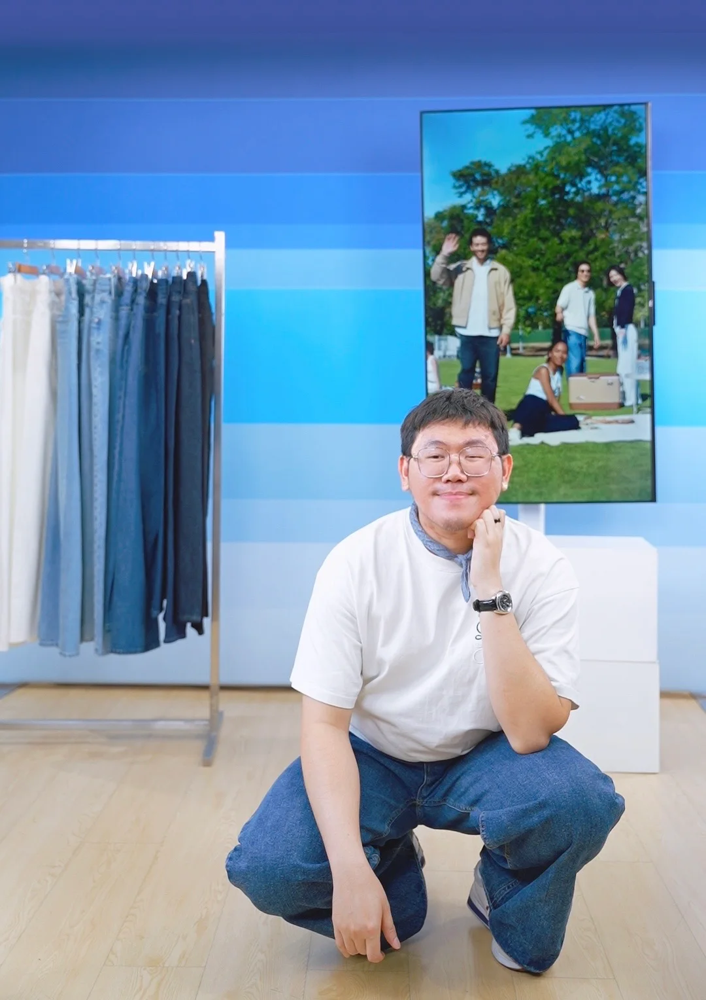
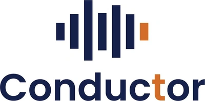
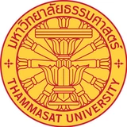

วางโจทย์ให้เป็นแผนงาน
รวบรวมความต้องการลูกค้า กำหนดลำดับงาน และประสานผู้รับผิดชอบให้เห็นภาพเดียวกัน เช่น การรับโจทย์ Makro โดยตรงและแปลงเป็นแผนไลฟ์ตลอดวัน

เกี่ยวกับอรรถพล / การบริหารโครงการ
บริหารโครงการ · โปรดักชันอีคอมเมิร์ซ · การดำเนินงาน
ผม อรรถพล ภูจอมขำ มีประสบการณ์มากกว่า 5 ปี ครอบคลุมการบริหารโครงการ กิจกรรม แคมเปญ และ Live Commerce ตั้งแต่วางแผน จัดสรรทีมและทรัพยากร ประสานลูกค้าและผู้เกี่ยวข้อง ไปจนถึงดูแลการดำเนินงานให้เป็นไปตามเป้าหมาย
ผมเติบโตจากงาน Producer มาสู่ Project Management จึงเข้าใจทั้งภาพรวมของโครงการและรายละเอียดที่ทีมต้องใช้ในการทำงานจริง จุดแข็งของผมคือการเชื่อมหลายฝ่ายให้ทำงานในทิศทางเดียวกัน และหาวิธีแก้ปัญหาเพื่อให้งานเดินต่อได้
แนวทางบริหารโครงการ
การวางแผนและประสานทีม
ที่มีตัวอย่างงานจริงรองรับ
รวบรวมความต้องการลูกค้า กำหนดลำดับงาน และประสานผู้รับผิดชอบให้เห็นภาพเดียวกัน เช่น การรับโจทย์ Makro โดยตรงและแปลงเป็นแผนไลฟ์ตลอดวัน
จัดสรรงาน ติดตามความพร้อม และประสานทีมข้ามสายงาน เช่น UNIQLO Arigato Festival ที่ดูแลทีม 10–15 คนตลอดประมาณ 10 วัน
เตรียมเช็กลิสต์ อุปกรณ์สำรอง และผู้ช่วยดูแลข้อมูลสินค้า พร้อมปรับกระบวนการตามสถานการณ์ เพื่อลดข้อผิดพลาดและรักษาความต่อเนื่องของไลฟ์
กำกับการนำเสนอและจัดคิวคำถามให้ตรงกับผู้ชม เช่น Maybelline Special Live ที่ผมดูแลในบทบาท Producer และขายลิปสติกมากกว่า 1,000 แท่งในประมาณ 2 ชั่วโมง
ประสบการณ์ทำงาน

MAY — AUG 2026
Project Manager
ดูแลโครงการฝึกอบรมและสัมมนาด้าน Finance และ AI โดยประสานลูกค้า วิทยากร และทีมให้รายละเอียดหลักสูตร การเตรียมงาน และการดำเนินงานสอดคล้องกัน
Focus: Project coordination · Training & seminar operations
FEB 2024 — APR 2026
Project Management
เติบโตจาก Producer สู่ Senior และ Project Management ดูแล Live Commerce และ Special Live หลายแบรนด์ ตั้งแต่การกำกับรายการไปจนถึงการบริหารทีม ทรัพยากร และกระบวนการทำงาน
Selected work: Makro · UNIQLO · Maybelline
MAY 2020 — JAN 2024
Assistant Producer
สนับสนุนงานโปรดักชันตั้งแต่รับบรีฟ วางแผนและเตรียมงาน ประสานผู้เกี่ยวข้อง ไปจนถึงการทำงานหน้างาน เป็นพื้นฐานของการเข้าใจทั้งโจทย์ลูกค้าและข้อจำกัดในการผลิตจริง
Foundation: Production coordination · Client brief interpretation
ดูผลงานช่วง MUSE ↗เส้นทางถัดไป
ผมต้องการต่อยอดประสบการณ์ด้าน Project Management และการประสานงานหลายฝ่ายไปสู่โครงการที่ท้าทายมากขึ้น โดยเฉพาะงาน Ecommerce และ Operations ที่ต้องเชื่อมแผนงาน ทีม และการดำเนินงานเข้าด้วยกัน พร้อมพัฒนาความสามารถในการวางแผนและขับเคลื่อนโครงการให้สร้างผลลัพธ์ที่ดีต่อองค์กร
การศึกษาและทักษะ

พัฒนศึกษา · 2563
เกรดเฉลี่ย 3.61 · เกียรตินิยมอันดับสอง
Word · Excel · PowerPoint · Canva · CapCut
ภาษาไทย · ภาษาอังกฤษ (ระดับกลาง)
พัฒนาทักษะอย่างต่อเนื่อง
หลักสูตรด้านการสื่อสาร ธุรกิจ และการตลาดที่เรียนผ่านแล้ว
กดที่เกียรติบัตรเพื่อดูภาพเต็ม
SET · 5 เม.ย. 2565
Entrepreneurial Mindset
ผ่านการเรียนหลักสูตร · ได้รับเกียรติบัตร
CHULA MOOC · 5 มิ.ย. 2566
Crisis Communication
ผ่านการเรียนหลักสูตร · ได้รับเกียรติบัตร
CHULA MOOC · 21 ม.ค. 2566
Business’s Conflict Resolution
ผ่านการเรียนหลักสูตร · ได้รับเกียรติบัตร
CHULA MOOC · 4 มิ.ย. 2566
How to build relationships with stakeholders through organizing events?
ผ่านการเรียนหลักสูตร · ได้รับเกียรติบัตร
CHULA MOOC · 16 ต.ค. 2566
Marketing in the 21st century
ผ่านการเรียนหลักสูตร · ได้รับเกียรติบัตร
เริ่มต้นโปรเจกต์ด้วยกัน
พูดคุยโอกาสด้าน Project Management, Ecommerce
และ Campaign Execution